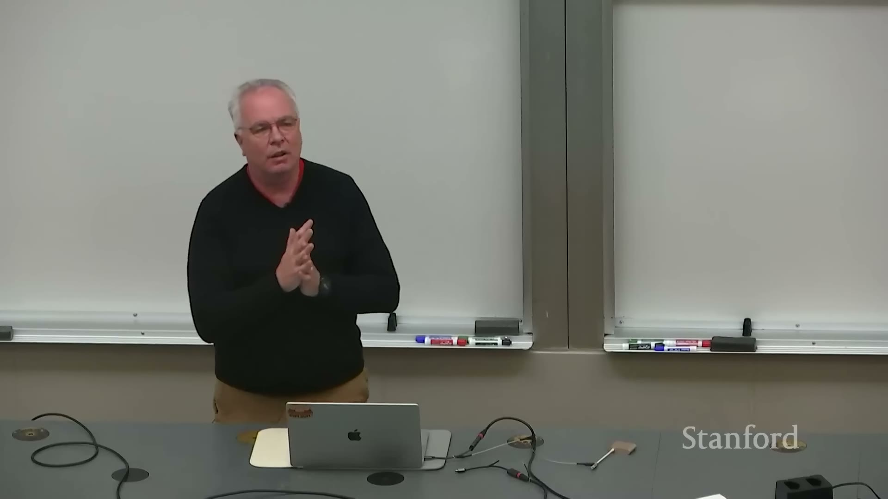
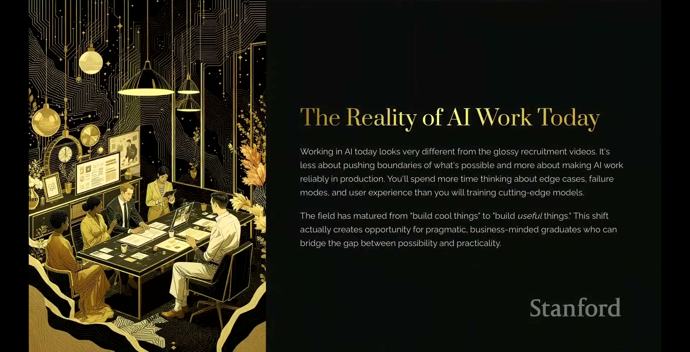
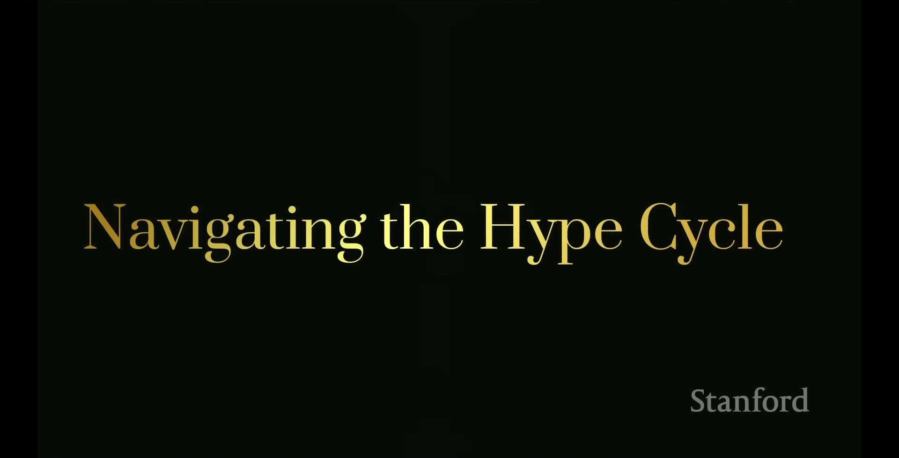
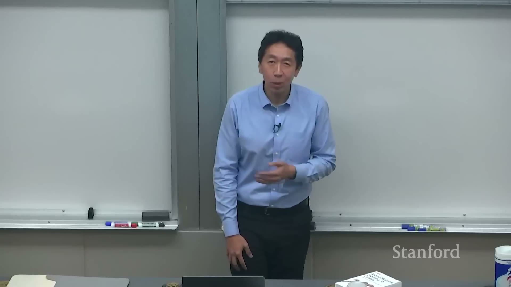

Конспект · Стэнфорд · CS230 · осень 2025

Карьера в ИИ: конспект всей лекции Стэнфорда CS230
Начальный уровень
Компания может получить работающую программу и всё равно не решить свою задачу. В конце разберём на примере продавцов, как просьба «сделайте агента» превратилась в понятную рабочую цель
Что за лекция. «Career Advice in AI», девятая лекция осеннего курса Stanford CS230 2025 года. Первые 18 минут выступает Эндрю Ын, затем слово получает Лоренс Морони. Здесь разобрана вся запись, включая вопросы до 1:45:04
Эндрю Ын преподаёт ИИ и известен как сооснователь Coursera. Ын представляет Морони как преподавателя TensorFlow и PyTorch, бывшего ведущего популяризатора ИИ в Google и руководителя группы в Arm на момент выступления. Их советы и истории собраны ниже в 12 мыслей. В конце есть три пары запросов для чата и короткая памятка
Оригинал
Где смотреть лекцию на русском
Официальная запись называется Stanford CS230 | Autumn 2025 | Lecture 9: Career Advice in AI, канал Stanford Online. Запись сделана осенью 2025 года
Английская речь и русский текст. В YouTube открой шестерёнку, затем «Субтитры». Выбери английские, снова открой «Субтитры», затем «Перевести» и «Русский», если эти пункты доступны. Если перевода не видно в приложении, попробуй браузер на компьютере
Русская звуковая дорожка. Посмотри доступные языки в настройках записи. Русские субтитры ещё не значат, что есть русский голос
Перевод другим голосом. В Яндекс Браузере можно включить перевод видео, если он доступен для этой записи. Специальные слова автоматический перевод иногда путает, поэтому ниже они объяснены по смыслу
Если YouTube недоступен в твоём подключении, для просмотра может понадобиться VPN. Для чтения конспекта запись открывать необязательно
Если времени мало, открой 05:30: как выбрать задачу, затем 58:38: история агента для продавцов и 1:35:19: хоккеист и отчёты. Карта ниже охватывает и остальные части, включая заключительные вопросы
Карта лекции
Что идёт в лекции по минутам
Нажми на время, чтобы открыть нужный фрагмент. Таблица идёт по порядку записи, а мысли ниже сгруппированы по темам
| Время | О чём речь |
|---|---|
| 00:04 | Зачем обсуждать карьеру в ИИ |
| 00:59 | Прогресс моделей и измерение длины задач |
| 02:41 | Более мощные программы и более быстрая разработка |
| 05:30 | Выбор задачи, обратная связь и роль инженера Этот фрагмент вернётся в мысли 12. Он стоит в начале записи, но завершает конспект, потому что помогает применить остальные советы к своей работе |
| 09:17 | Окружение, связи и выбор команды |
| 15:25 | Самостоятельные проекты, ответственность и усилия |
| 18:33 | Представление Морони и история неудачных собеседований |
| 23:41 | Опыт Морони и его объяснение изменений рынка найма |
| 29:17 | Глубина знаний, польза для бизнеса и доведение до результата |
| 36:04 | Работающий продукт, риски и ответственное применение |
| 41:21 | Ошибки фильтров генерации изображений |
| 47:41 | Генерация кода и технический долг |
| 52:10 | Как отличать полезный код от будущих проблем |
| 56:35 | Хайп, соцсети и роль технического советника |
| 58:38 | Кейс: агент для подготовки к продажам |
| 1:02:14 | Четыре действия в агентном процессе |
| 1:05:26 | Обещания про кино и проверка громких демонстраций |
| 1:10:00 | Риски пузыря и ценность фундаментальных навыков |
| 1:14:28 | Облачные и самостоятельно размещаемые модели |
| 1:19:17 | Узкая специализация или разнообразие навыков |
| 1:21:29 | Малые модели и вычисления на устройствах |
| 1:25:01 | Понимание намерения и примеры генерации видео |
| 1:29:29 | Вопросы о видео, хайпе, образовании и нетехнических пользователях |
| 1:39:51 | ИИ в исследованиях и доступ к вычислениям |
| 1:43:14 | Социальное равенство, злоупотребления и завершение |
Конспект
Главное из лекции: 12 мыслей
Сначала Ын и Морони говорят об инструментах, обучении и работе с коллегами. В последней мысли они возвращаются к вопросу: какую задачу стоит решать с помощью ИИ?
- Возможности ИИ растут, инструменты приходится пробовать заново
- Условия обучения зависят от людей рядом
- Команда оценивает, как с тобой обсуждать ошибки
- Показывай результат, который связан с нужной работой
- Рабочее решение проверяют вместе с его рисками
- После генерации кода остаётся работа по сопровождению
- Громкое обещание нужно перевести в конкретную возможность
- Способ запуска модели выбирают под требования задачи
- Эффектный результат нужно сравнить с исходным намерением
- Знание своей работы помогает начать без инженерного образования
- Доступ к инструменту ещё нужно превратить в проверяемую пользу
- Начни с вопроса «зачем», затем выбирай решение
Мысль 1. Возможности ИИ растут, инструменты приходится пробовать заново
У моделей есть тесты, в которых нельзя набрать больше 100%. Если результат приблизился к потолку, такая шкала уже плохо показывает дальнейшее улучшение. Ын предлагает измерять, сколько времени у человека заняла бы задача, с которой справляется ИИ
Он пересказывает исследование METR: длина задач, доступных моделям, удваивается примерно за семь месяцев. Для программирования он упоминает другую оценку, около 70 дней, основанную на меньшем объёме данных
Что стало доступнее отдельному разработчику
Ын выделяет два изменения. Модели умеют больше, а код приложения с их помощью пишется быстрее. Он советует попросить модель написать трансформер, основу современных нейросетей. Так Ын показывает, какую часть программирования уже можно поручить модели
Осенью 2025 года Ын пробовал Claude Code и OpenAI Codex после выхода GPT-5. В день выступления вышел Gemini 3, который он ещё не успел попробовать. Поэтому Ын советует проверять новые инструменты на своей задаче
Курсы Ын советует сочетать с собственными проектами. Собственный проект показывает, что удалось усвоить: получилось ли что-то создать, показать людям и изменить после их замечаний? К выбору задачи Ын возвращается позже
Мысль 2. Условия обучения зависят от людей рядом
Ын считает, что рядом с людьми, которые учатся и обсуждают свою работу, проще расти в профессии. В университете он советует знакомиться с такими людьми и обмениваться знаниями
Ын вспоминает исследования: человек чаще курит, если курят его друзья. Про учёбу таких данных нет, но он видит то же самое: привычки окружения перенимаются
Уточни, в какой команде предстоит работать
Разговор с исследователем иногда помогает понять, пригодится ли новая технология в проекте. Ын вспоминает, что после таких бесед менял технические решения. Знакомства дают возможность учиться друг у друга
При выборе работы это превращается в конкретный вопрос: кто будет рядом каждый день? Его студент принял предложение известной компании, которая заранее не назвала команду. Вместо желанной работы с ИИ он попал на Java-систему обработки платежей, около года был разочарован и ушёл. Позднее похожее случилось с другим студентом в той же компании, на другом проекте
Название компании Ын не раскрывает. Он советует выяснить будущую команду до принятия предложения и разобраться, чему у неё можно научиться. Известное имя компании этого не скажет
Усилия с учётом жизненных обстоятельств
Ын рекомендует много работать тем, кому позволяют здоровье и обстоятельства. Он вспоминает усилия успешных аспирантов и пользу собственных проектов по вечерам и выходным. Неудачная попытка тоже может чему-то научить, если эксперимент не вредит другим людям
Ын отдельно говорит о людях, у которых есть дети, травмы, инвалидность или другие обстоятельства, требующие времени и сил. Их нужно уважать и поддерживать. Каждый выбирает посильный режим работы
Мысль 3. Команда оценивает, как с тобой обсуждать ошибки
Лоренс Морони продолжает мысль Ына об окружении. Кандидат выбирает коллег, а коллеги выбирают человека, с которым предстоит решать задачи. Важны и знания, и умение работать в команде
История сильного программиста с отказами
Знакомый Морони, разработчик медицинских программ, потерял работу и отслеживал более 300 вакансий. С техническими заданиями он справлялся, но после длинных серий интервью приходили отказы. Морони предложил тренировочное собеседование с трудными вопросами
Кандидат понял совет отстаивать своё мнение так: на возражения нужно отвечать враждебно. На собеседовании это выглядело тревожно: как потом обсуждать с ним ошибки без конфликта?
После работы над общением кандидат, по рассказу Морони, устроился в компанию, где ценили сотрудничество, и стал больше зарабатывать. Морони связывает перемену с тем, как кандидат отвечал на возражения
На работе полезнее объяснить своё решение и спросить, что именно не устраивает коллегу. Можно защищать свои аргументы и при этом менять версию, если замечание оказалось верным
Мысль 4. Показывай результат, который связан с нужной работой
Морони работал в Microsoft, Google, Reuters и стартапах. Он говорит о сокращениях и высокой конкуренции для начинающих специалистов, но считает, что найти работу всё ещё возможно
Морони связывает конкуренцию на момент лекции с остановкой активности во время пандемии, быстрым набором в 2022-2023 годах и пересмотром расходов в 2024-2025 годах. Одного слова «ИИ» в резюме, по его мнению, стало недостаточно

Глубина знаний и способность закончить работу
Для Морони важно разбираться в машинном обучении, устройстве моделей и исследованиях. Тогда легче оценить новый подход и понять, пригодится ли он для задачи. Работодатель хочет увидеть и проект, который уже работает
Морони вспоминает, как в Google его не взяли менеджером продукта, а потом взяли инженером. Проект в портфолио показывает навыки, нужные конкретной команде
Как проект изменил собеседование
Перед интервью в облачную команду Google Морони написал Java-приложение на облачной платформе Google и указал код в резюме. Приложение прогнозировало биржевые цены по техническому анализу. На собеседовании этот код помог показать, как он работает с облачной платформой
Интервью сосредоточилось на знакомом ему проекте: можно было объяснить принятые решения и их связь с работой команды. Морони предпочитает простую работающую версию впечатляющей идее, которая так и осталась на словах
Морони также говорит о режиме 996: с девяти утра до девяти вечера шесть дней в неделю. Количество часов само по себе не показывает продуктивность. В качестве личного примера он вспоминает, как писал книгу, пока смотрел бейсбол. Так он показывает разницу между временем за работой и полученным результатом
Мысль 5. Рабочее решение проверяют вместе с его рисками
Компании, по наблюдениям Морони, переходят от восхищения демонстрацией модели к вопросам применения. Что получает пользователь? Понятен ли интерфейс? Как решение помогает основной работе? Кто разбирает ошибки после запуска?
Морони не возражает против общественной активности сотрудников, но считает, что некоторые компании стали ставить её выше основной работы. В пример он приводит конфликт в Google. По мнению Морони, проект должен помогать компании делать её основную работу

Почему правильной цели фильтра недостаточно
Перед запуском ИИ Морони предлагает проверить, работает ли продукт для разных людей, где он ошибается и как исправлять ошибки
Морони вспоминает прежнюю версию Gemini. Генератор выполнял запросы с разным происхождением героини, но отказывал на запросы со словами Caucasian и white. При этом объяснял, будто изображения людей вообще запрещены. На запрос об ирландской женщине каждый раз получались рыжие волосы
Фильтр должен был защищать от стереотипов, но отвечал непоследовательно. Вопрос из зала о самураях и исторических изображениях показал, как трудно учитывать контекст
Он добавляет, что позже систему улучшили. Его рабочий совет: обнаруживать ошибки, исправлять их и давать коллегам возможность учиться на неудачах
Мысль 6. После генерации кода остаётся работа по сопровождению
Сгенерированный код тоже нужно сопровождать. Морони называет техническим долгом работу, которую оставляет после себя первая версия: исправления, документацию, поддержку и новые требования
Морони сравнивает технический долг с денежным: брать его стоит, только если понятна польза и будущие расходы. Быстрая первая версия может пригодиться, когда команда знает, зачем она нужна и кто будет её поддерживать
Прототип можно выбросить, зависимость организации останется
В собственном приложении для кинопроизводства Морони несколько раз создавал, проверял и выбрасывал прототипы. Каждая попытка уточняла требования. Когда новую версию легко получить запросом, неудачный прототип проще выбросить
Морони также описывает стартапы, которые торопятся собрать прототип и показать инвесторам. Он советует сразу решить, кто потом будет исправлять и поддерживать этот код
Прежде чем оставить прототип в работе, проверь: решает ли код нужную задачу, понятны ли алгоритмы и имена переменных, есть ли документация и сможет ли другой человек исправить программу после ухода автора?
Если код понимает только автор, после его ухода исправлять программу будет некому. Морони приводит пример: руководитель собирает приложение в Replit, а сопровождать его должны инженеры. Кто и как будет поддерживать программу, лучше обсудить заранее
Почему новые запросы не всегда исправляют программу
При создании приложения для macOS модель предлагала Морони интерфейсы программирования для iOS, операционной системы iPhone. По его мнению, модель училась в основном на примерах для телефона. Последующие запросы усложняли код, часть пришлось править вручную
Когда нет ясной задачи, среди новых файлов трудно найти полезный результат. Инженер может оценить, какую версию оставить и сколько сил потребуется на её поддержку
Мысль 7. Громкое обещание нужно перевести в конкретную возможность
Морони напоминает: соцсети продвигают сообщения, которые собирают реакции. Точный разбор может остаться незамеченным. Это касается и профессиональной ленты LinkedIn
Технический специалист может объяснить коллегам, что за громким обещанием уже работает, а что пока показали лишь в демонстрации. Для этого ему нужны знания технологии, умение читать исследования и разбирать публикации, которые видит руководство

Короткий клип и обещание полнометражного фильма
Один руководитель компании обещал перейти от коротких видео к 90-минутному фильму по одному запросу. На момент лекции Морони считает обещание несбывшимся и спрашивает, как вообще задать таким запросом полноценную историю
Морони предлагает говорить просто: какие кадры уже получаются, сколько они длятся и чего пока не хватает. В демонстрации «клона Minecraft» он видит короткий фрагмент, а не готовую игру. Так человеку проще понять, пригодится ли инструмент для его задачи
Почему прогноз о пузыре остаётся прогнозом
Морони сравнивает ажиотаж вокруг ИИ с пузырём доткомов, упоминает Amazon, Google и pets.com. Денег вложено много, похожих продуктов тоже много, а пользы, по его мнению, меньше
Морони вспоминает «Титаник»: мало назначить людей следить за опасностью, им ещё нужны подготовка и инструменты. Так же при быстром внедрении ИИ нужно заранее продумать, кто заметит ошибку и что сможет сделать
Для карьеры Морони советует изучать основы и расширять навыки. Тогда после смены модного инструмента будет на что опереться
Мысль 8. Способ запуска модели выбирают под требования задачи
Морони думает, что будут развиваться оба пути: крупные модели во внешних сервисах и модели, которые организация размещает сама. Здесь важно различать два понятия. «Открытые веса» означают, что параметры обученной модели доступны. Самостоятельное размещение означает, что организация запускает модель на своих или арендованных серверах
Когда важен контроль над данными
Пример из кинопроизводства: студии нужен анализ сюжетов и факторов успеха фильма, но передавать материалы чужому сервису она не готова. Морони говорит, что похожие требования к данным бывают у юристов и врачей
Он ожидает спроса на дополнительное обучение моделей под узкую задачу. Это обучение часто называют fine-tuning. При выборе он предлагает проверять качество на собственной задаче
Узкая специализация и зависимость от одной технологии
Студент спрашивает, стоит ли идти в NVIDIA на узкую специализацию. Морони считает узкую специализацию полезной, если человеку интересна эта область. При выборе он советует подумать, что делать, если спрос на одну технологию изменится
Кроме работы с моделью, пригодится умение собрать приложение, сделать удобный интерфейс и подготовить систему к росту нагрузки. Тогда можно работать над продуктом целиком. Если знать только API одного сервиса, при его смене придётся учиться заново
Малые модели на телефоне
Морони ждёт, что всё больше ИИ будет работать прямо на телефоне
Морони приводит пример Alipay: поиск по личным фотографиям и сборка подборок. Обработка на устройстве может быть важна из-за контроля над фотографиями, задержки и расходов на облако. Так требования к данным и скорости помогают выбрать место запуска модели
Мысль 9. Эффектный результат нужно сравнить с исходным намерением
Морони предлагает использовать модель для уточнения замысла до генерации. В его примере хоккейный ролик выглядит правдоподобно, но детали расходятся с тем, что происходило на самом деле
Две клюшки и зрители в пустой арене
Морони рассказывает: генерация по фотографии сына добавила зрителей в пустую тренировочную арену, дала игроку две клюшки и сопроводила промах аплодисментами. Он замечает, что открыл не тот ролик, но считает его подходящим примером ошибки
Затем он показывает сцену с виртуальными актёрами. Для неё заранее описал историю, эмоции и ограничения кадра, а для генерации выбрал Veo. Модель помогала уточнить запрос. После генерации он оценивал, соответствует ли сцена замыслу
Что показало сравнение
Студент спрашивает: может быть, дело в недостатке хоккейных данных, а не в способе подготовки? Морони признаёт, что условия различались и отдельного сравнения не делал
Подробная подготовка, по словам Морони, помогала сократить число попыток: обычно он укладывался в две-три
Морони также признаёт, что знакомые профессиональные актёры критиковали игру виртуальных персонажей. Он проверял конкретные вещи: переданы ли нужные эмоции, правильно ли действуют герои и сходится ли сцена с историей
Мысль 10. Знание своей работы помогает начать без инженерного образования
На вопрос о неожиданностях в индустрии Морони рассказывает две истории: о закрытом сертификате и о человеке, который сам наладил отчётность для катков. Его тревожит, что руководители верят громким обещаниям и выбирают быструю прибыль, даже если полезный проект от этого страдает
История сертификата TensorFlow
У курсов TensorFlow на Coursera был свой сертификат. Морони рассказывает об участнике из Сирии, которому сертификат помог получить работу в Германии и поддержать семью
По словам Морони, программу старались сделать самоокупаемой, но она обходилась Google примерно в 100-150 тысяч долларов в год и была закрыта
Хоккеист и квартальные отчёты
Другой его знакомый, бывший профессиональный хоккеист, управлял некоммерческими катками. Каждый квартал нужно было собирать отчёты из таблиц, PDF и рабочих данных. Эту работу выполняли консультанты
Программировать знакомый не умел, зато понимал, какие данные и какой отчёт нужны организации. Он стал загружать материалы в ChatGPT. По рассказу Морони, подготовка сократилась примерно до двух часов; Морони посмотрел результат и счёл его удачным
Сэкономленные деньги шли на хоккейное снаряжение и занятия для детей. Сумму Морони называет по-разному: сначала говорит о прежних расходах свыше 150 тысяч долларов в год, затем об экономии 150 тысяч и в конце о диапазоне 100-150 тысяч. Сумма в рассказе меняется, поэтому точную экономию по нему посчитать нельзя
Хоккеист знал, какие данные нужны каткам, а ChatGPT помог собрать их в отчёт. В ответе следующему студенту Морони советует специалистам объяснять таким пользователям, как работает инструмент, где он может ошибиться и как проверить результат. Знание работы катка помогло хоккеисту справиться с задачей без инженерного образования
Мысль 11. Доступ к инструменту ещё нужно превратить в проверяемую пользу
На вопрос об ИИ в исследованиях Морони поддерживает автоматизацию, но просит проверять, принесла ли она пользу. Он вспоминает собственную склонность автоматизировать работу ещё во время изучения физики
Один графический процессор на исследовательскую группу
В университете Уэльса он встретил исследователя рака мозга. По воспоминанию Морони, на десять исследователей был один графический процессор, а собеседнику доставалась половина вторника. Если расчёт срывался, приходилось снова ждать своей очереди
Морони показал ему Google Colab и возможность использовать облачные вычисления. Так исследователь получил больше времени для вычислений. Что произошло с исследованием дальше, Морони не знает
Последний вопрос: равенство или неравенство?
В финале из зала спрашивают, какой социальный эффект принесёт ИИ. Морони говорит, что ИИ может и уменьшить неравенство, и усилить его. Поэтому он предлагает учить людей пользоваться инструментом и готовиться к злоупотреблениям
Он предлагает исходить из добрых намерений, одновременно готовясь к недобрым. Ошибки возможны и при хороших намерениях. Даже полезный замысел может дать плохой результат, поэтому последствия нужно проверять. Затем Ын благодарит спикера и аудиторию
Мысль 12. Начни с вопроса «зачем», затем выбирай решение
В начале лекции Ын говорит: получить код по ясному заданию стало проще. Труднее понять, какую задачу стоит решать. Этим занимается менеджер продукта: выясняет потребность людей и выбирает, что создавать

Покажи человеку и уточни задание
Ын предлагает повторять четыре шага: сделать версию, показать людям, выслушать замечания и уточнить задачу. Пользователь может не разобраться в интерфейсе или попросить другую функцию, хотя разработчик только что улучшил совсем другую часть
Ын замечает, что в некоторых командах на одного менеджера продукта теперь приходится один или два инженера. При этом он уточняет: состав зависит от задачи команды
Инженер, который сам разговаривает с пользователями, может быстрее выбирать следующую доработку. Но Ын признаёт прежнюю ошибку: пытаясь склонить всех хороших инженеров к продуктовой работе, он заставил некоторых почувствовать себя плохими специалистами. Такая работа нравится не каждому: хорошие инженеры нужны и без неё
Компания попросила агента, продавцам мешала подготовка к встречам
В истории Морони с 58:38 европейская компания просит внедрить ИИ-агента. Морони спрашивает, зачем компании агент, и узнаёт, что руководитель услышал об агентах в соцсетях. Тогда Морони идёт к продавцам и расспрашивает об их работе
Нашлась конкретная трудность: перед встречей приходилось часами изучать сайты компаний и профили людей. По описанию Морони, около 80% времени уходило на исследование, около 20% на продажи. Сначала поставили цель: продавцы работают на 20% эффективнее. Только потом решили, где поможет ИИ
Четыре действия, по которым можно проверить агента
Морони описывает работу агента в четыре шага. Здесь агент - система, которая выполняет задачу по плану и использует доступные инструменты
- Уточнить намерение: какая работа мешает и какой результат нужен
- Составить план с учётом доступных инструментов, например поиска и браузера
- Выполнить план и получить результат
- Сопоставить результат с целью и при необходимости повторить
По рассказу Морони, пилот сократил потерянное время на 10-15%, а обзор перед встречей стал занимать минуты вместо часов. Первоначальная цель повысить эффективность на 20% относилась к другому показателю
Морони также говорит, что после пилота продажи и заработок продавцов немного выросли, а сами они стали довольнее работой
Компания просила агента, но продавцам был нужен короткий обзор перед встречей. Начни со своей знакомой работы: выясни, что отнимает время, опиши нужный результат и лишь потом выбирай инструмент
Для своего чата
Проверь лекцию в своём чате: три приёма до и после
Ниже три запроса, которые можно отправить в ChatGPT, Claude или другой чат. В каждом примере показано, как меняется запрос после уточнения задачи. Специальные подключения не нужны, а ответ зависит от модели
Приём 1. Сначала уточни, зачем нужна автоматизация
Морони сначала поговорил с продавцами и только потом предложил агента. Попробуй так же уточнить задачу перед выбором инструмента
До
Придумай ИИ-агента для моей работыПосле
Помоги понять, стоит ли автоматизировать подготовку к встречам с клиентами. Сейчас я собираю сведения из сайта компании и своих заметок. Сначала задай до пяти вопросов: что мешает, кому нужен результат, какие данные есть, какие ошибки недопустимы и как проверить пользу. Пока не предлагай инструменты и ничего не придумывай. Дождись моих ответовЧат сначала задаст вопросы о работе. Ответь на них, а затем попроси план. Этот запрос сам по себе не создаёт агента и не подключает поиск
Приём 2. Заранее опиши, какой результат можно принять
В ролике Морони проверял, совпадает ли результат с замыслом. Для отчёта тоже заранее задай, что должно получиться и какие расчёты нужно проверить
До
Сделай квартальный отчёт по этим даннымПосле
Вот учебные данные катка за квартал: январь 120 посещений, февраль 150, март 130. Подготовь короткий отчёт для руководителя: посещения по месяцам, итог за квартал, изменение марта к январю в посещениях и процентах. Затем отдельно проверь расчёты. Не добавляй сведения о выручке или причинах изменений: их здесь нет. В конце перечисли, каких данных не хватает для вывода о работе каткаЭто учебные числа, их нет в истории Морони. Проверка: всего 400 посещений; в марте на 10 посещений и примерно на 8,3% больше, чем в январе. Причину роста из этих чисел узнать нельзя
Приём 3. Проверь, что останется после первой версии
В мысли 6 Морони предупреждает: программу придётся поддерживать и после ухода автора. Спроси об этом до запуска
До
Вот идея: чат составляет отчёты по таблицам. Как быстрее это запустить?После
Разбери идею: чат составляет квартальный отчёт по таблицам. Ничего не запускай. Отдельно перечисли, что уточнить до прототипа, какие проверки нужны перед рабочим использованием и кто должен уметь исправить результат. Укажи возможные ошибки в данных и расчётах, вопросы о доступе к файлам и о поддержке после ухода создателя. Не объявляй идею надёжной без примеров и критериев проверкиЧат перечислит, какие данные нужны, как проверить отчёт и кто исправит ошибку. Используй этот список, чтобы составить план проверки
Памятка
Вся лекция в одной памятке
- Пробуй новые инструменты на своих проектах
- Перед оффером узнай, с кем будешь работать, и учитывай свои силы
- Учись обсуждать замечания и показывать законченный результат
- Перед запуском проверь, где ИИ ошибается и кто исправит результат
- Реши заранее, кто будет поддерживать программу после запуска
- Сравнивай громкие обещания с тем, что инструмент уже умеет
- Выбирай модель и место запуска с учётом задачи и доступа к данным
- Начни со знакомой задачи: уточни цель, составь план, выполни его и проверь результат
Источники
Откуда взят конспект
Основа - полная запись Stanford Online и её английские субтитры, включая вопросы из аудитории до 1:45:04. Текст передаёт содержание своими словами. Оценки рынка, прогнозы и результаты частных историй переданы как слова спикеров осенью 2025 года: они не гарантируют такой же результат в другой ситуации
- Stanford CS230 | Autumn 2025 | Lecture 9: Career Advice in AI - официальная запись, источник всех историй и таймкодов
Частые вопросы
Как отличить мысль лектора от вывода автора конспекта?
Открой указанный отрезок записи и сопоставь формулировку с речью. Если пишешь собственное продолжение мысли, подпиши его как свой вывод. Учебные числа из упражнения не переноси в историю спикера
Как обсудить лекцию с человеком из другой профессии?
Возьми одну рабочую ситуацию этого человека и спроси, какая мысль лекции помогает принять решение. Затем вместе назовите наблюдаемый результат маленькой проверки. Названия моделей и история чужой компании без этой связи могут остаться отвлечённым примером
Что сохранить после просмотра, чтобы вернуться к решению?
Запиши вопрос, выбранное действие и ссылку на нужную минуту записи. Рядом оставь дату, когда проверишь результат. Так у тебя будет основание для следующего решения, а не только список понравившихся цитат
Теперь у тебя есть вопросы к своей задаче. Следующий шаг - увидеть, какие проекты можно собрать с нейросетями без знания кода
Что можно делать с нейросетями, если не знаешь кода?
Чтобы почувствовать размах, посмотри Концентрат Ивана Сергеева. ИИ-агенты на твоих глазах собирают продукт, контент, сайты и воронки без кода. Это основа под любую цель: свои услуги, партнёрка, чужой бизнес. Три дня бесплатно, VIP с четвёртым днём - 990 ₽
Забрать КонцентратУже знаешь, чего хочешь? Тогда в мастер-группу Ивана: система продаж на ИИ без продюсера и технаря, сопровождение и сообщество
Заполнить анкету предзаписиНабор открывается редко, кто записался заранее, получает лучшую цену и бонусы. Платить сейчас не нужно
Реклама. ИП Сергеев И. С., ИНН 352511695540. erid: 2Vtzqvk2p6q